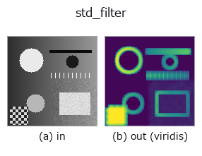

texture op• Data kinds: image → image
• Call: fullseye.apply(img, "std_filter", a=0.5, b=0.5) (the 2-D model is one image plus two scalar knobs a,b∈[0,1])
• HALCON equivalent: deviation_image (the HALCON reference is a useful guide to its meaning and parameters)

*The figure is the actual output on a synthetic 128×128 input. Left: input, right: output. Point clouds are drawn as a top-down scatter (brightness = z), 1-D series as a line plot, volumes as the maximum-intensity projection along z, videos as the middle frame, complex images as magnitude; return values that are not pictures are shown as the values themselves.*
*The output is shown in a viridis-like pseudo-colour (dark purple = low, yellow = high) so that a field of quantities — distance, phase, orientation, depth — can be read.*
Sweeping knob a (0.1 / 0.5 / 0.9, the other knob at its default):
▸ std_filter: knob a sweep (docs site)
*Knob b does not change the output (measured: identical at 0.1 / 0.5 / 0.9).*
On other images (synthetic scene / photo / coins. Top row: inputs, bottom row: their outputs. Knobs at default):
▸ std_filter: other inputs (docs site)
*No colour (H,W,3) input is shown: this op treats the colour channel as a third spatial axis (it crosses channels). Call it per channel.*
Standard deviation within a local window (an indicator of texture coarseness). Equivalent to HALCON's `deviation_image` (Calculate the standard deviation of gray values within rectangular windows.).
> The detailed description below is the original text — the summary and the headings are translated.
`a が窓サイズを 3,5,7,9（_k(a)）に振る。b は未使用。E[v²]-E[v]² を窓ごとに求めて平方根を取り（負の丸め誤差は 0 にクランプ）、_norm` で正規化する。値が大きいほどその窓内の階調が激しく変化している（テクスチャがある/エッジが多い）ことを示す。
• gallery2d_texture_freq family guide
• Sample-data catalog (download URLs / licences) — 2-D uses skimage.data (BSD/public domain) plus synthetic images; 3-D lists download URLs for real data sources (Stanford, PDS, …).
• Operator provenance and references — the sources of the research/methods this op family came from.
• The canonical algorithm (author, year) and its uses are named in the family usage guide above.
The program below has been verified to run (same input as the figure). In Studio's help this block becomes buttons that load and run it on the spot.
std_filter 0.50 0.50
▸ Load this pipeline · Load & run
• gallery2d_texture_freq — py -3.11 examples/gallery2d_texture_freq.py
image as input)identity · gaussian · mean_box · bilateral · unsharp · median · min_filter · max_filter
texture)gabor · sk_frangi · sk_meijering · sk_hessian · sk_gabor · sk_lbp · sk_entropy · sk_shape_index
*Provenance: ops.py — 2D operator registry. This per-op note is generated by tools/opdocs.py md (do not hand-edit).*
© 2026 Kazufumi Furuse — Fullseye operator documentation. Licensed under Apache-2.0.
{kind=link}
{kind=link}